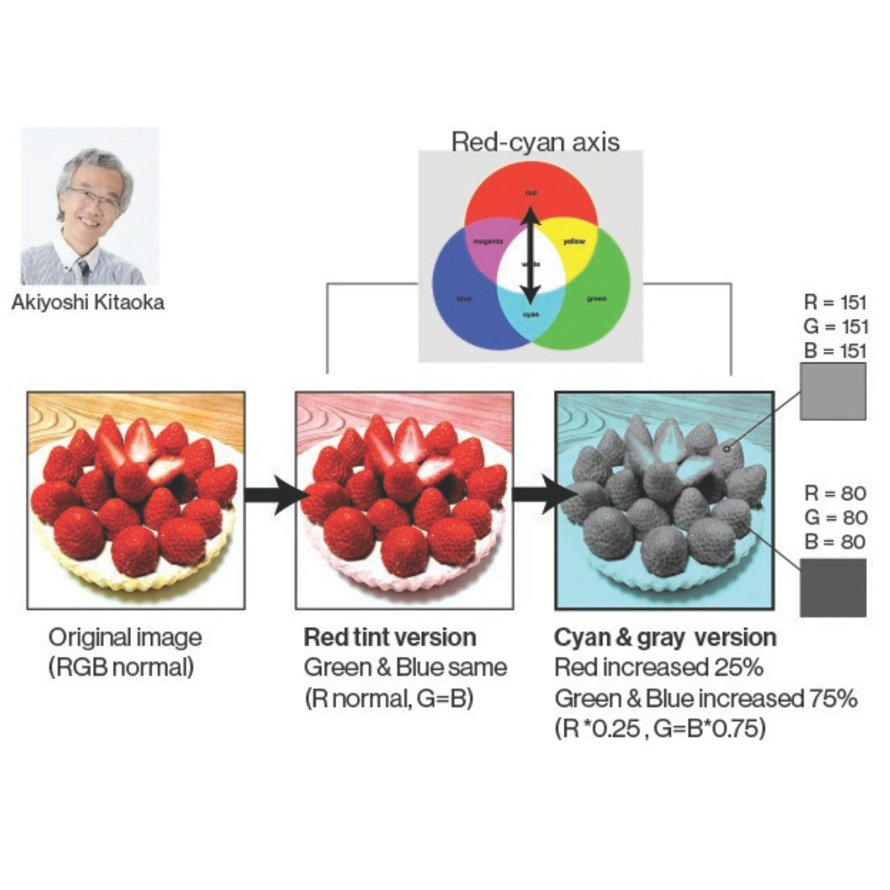
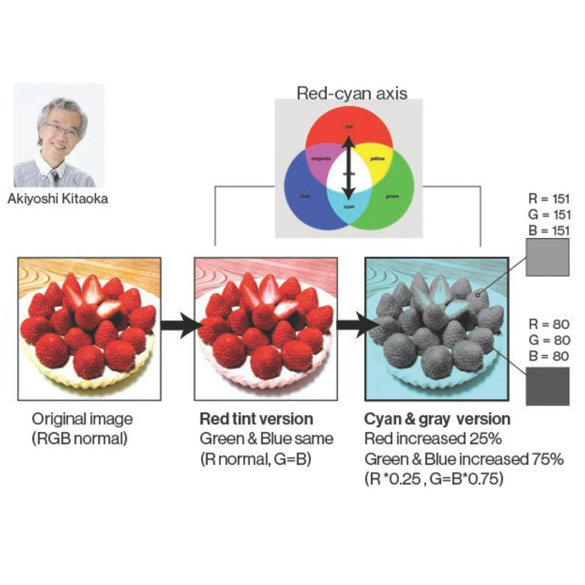

Color Induction

 

Color induction is the change in perceived color of a light caused by a nearby inducing stimulus.
When we view the world, we blend together local color information. This effect is strongest when one color shares an edge with (or neighbors) a contrasting color.
In the illusion, we selected one color (teal) and then change the neighboring colors (orange or purple).
The result is a mixing (or induction) of the two neighboring colors, resulting in a perception of two different colors (green and blue).
In The Wild: Gray Strawberriest:
In 2017, psychologist Akiyoshi Kitaoka created a viral image of strawberries that appears pinkish in color, but has no red in the image at all. To create this illusion, he transformed the colors in the image to only those on the red-cyan axis. First, made all the blue and green pixels the same value. Then he increased the red values a small amount. And finally, the blue/green a large amount so that all pixels in the image are either cyan or gray.
This effect creates the color red based on two things:- the contrast of gray next to cyan
- brains will predict that strawberries are red.